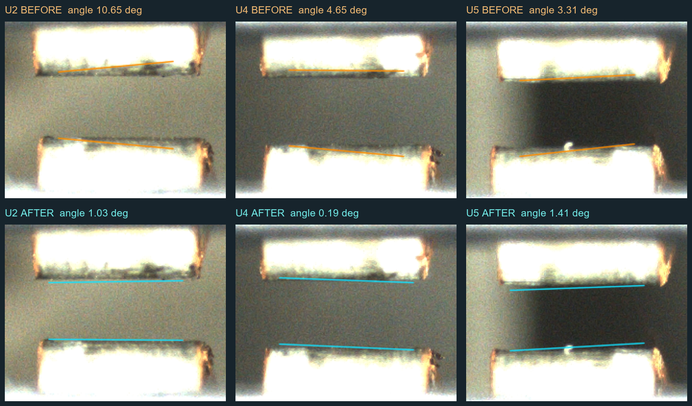
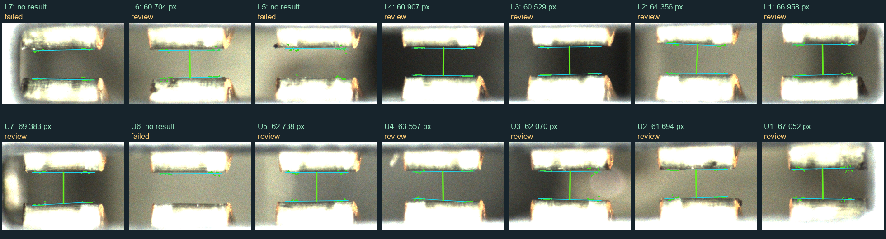
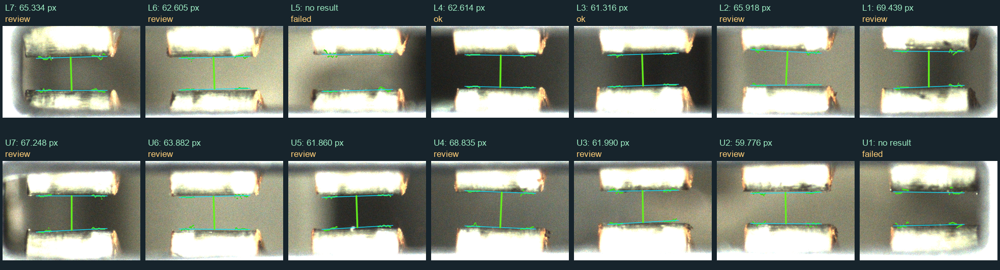
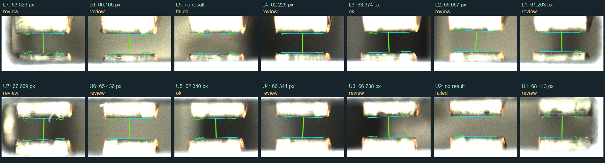
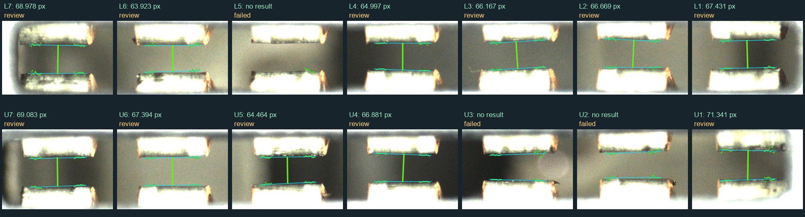
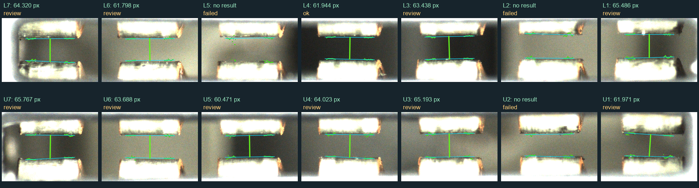
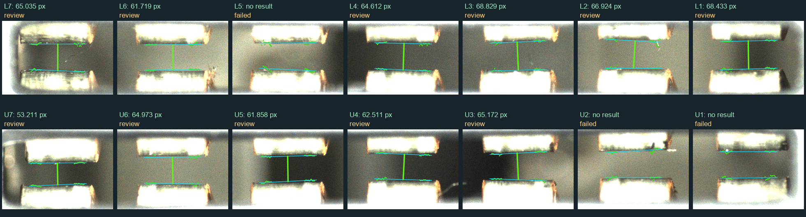

图片上排从左到右 L7 → L1，下排 U7 → U1。共6张图、84个位置；数据表顺序为U1～U7、L1～L7。
自动取边已改到金属唇边朝向开口的外轮廓：先定位亮面，再根据局部开口背景寻找轮廓变化；用左右稳定段确定直线，中间突起或凹口保留为诊断点。上下线独立拟合，不强制水平或平行，不利用实验室数值挑选边。
本轮：通过内部图像诊断 5 处、输出候选并提示复核 63 处、无有效输出 16 处。“通过”仅指图像诊断；还没有独立的毫米精度验证。手动选点是可选检查功能，自动结果无需重新手动点击。
上行橙线：上一版亮面内部交界；下行青线：新版主体外轮廓。两行使用相同原图裁剪和相同放大倍率。

| 位置 | 上版夹角 | 新版夹角 | 新版垂距 px | 状态 |
|---|---|---|---|---|
| U2 | 10.64900° | 1.03416° | 59.77628 | review |
| U4 | 4.64911° | 0.18884° | 68.83459 | review |
| U5 | 3.30604° | 1.41460° | 61.85962 | review |
夹角用于检查取线方向，不是把两条线拉成平行的目标。用户截图用于确定测量对象，未把截图中的手画线当成精确原图坐标或毫米真值。
青色：主体外轮廓拟合候选；绿色小点：左右定线采样；绿色连线：垂距。failed位置仅保留诊断线、不输出有效尺寸。交互页面可展开全部真实候选点、中央偏差及背景拟合质量。






| 图片 | U1 | U2 | U3 | U4 | U5 | U6 | U7 | L1 | L2 | L3 | L4 | L5 | L6 | L7 |
|---|---|---|---|---|---|---|---|---|---|---|---|---|---|---|
| 1.png | 67.05202 | 61.69394 | 62.07004 | 63.55697 | 62.73832 | — | 69.38301 | 66.95817 | 64.35584 | 60.52871 | 60.90689 | — | 60.70366 | — |
| 2.png | — | 59.77628 | 61.98975 | 68.83459 | 61.85962 | 63.88217 | 67.24762 | 69.43928 | 65.91812 | 61.31604 | 62.61354 | — | 62.60461 | 65.33353 |
| 3.png | 68.11255 | — | 66.73753 | 66.34402 | 62.34020 | 65.43551 | 67.66902 | 61.26295 | 66.06710 | 63.37365 | 62.22615 | — | 60.16620 | 63.02324 |
| 4.png | 71.34128 | — | — | 66.88132 | 64.46373 | 67.39370 | 69.08310 | 67.43149 | 66.66871 | 66.16663 | 64.99658 | — | 63.92262 | 68.97804 |
| 5.png | 61.97123 | — | 65.19307 | 64.02325 | 60.47099 | 63.68842 | 65.76695 | 65.48575 | — | 63.43827 | 61.94423 | — | 61.79810 | 64.31980 |
| 6.png | — | — | 65.17219 | 62.51053 | 61.85820 | 64.97289 | 53.21150 | 68.43324 | 66.92360 | 68.82850 | 64.61227 | — | 61.71938 | 65.03455 |
当前垂距规则：下线段中点到上直线的垂距（待与实验室确认）。mm/px仍是现有样本拟合比例，并非物理标定。先确认主体边定义与图像重复性，再确定补偿；本次原Excel、原图及上一版报告均未修改。
本轮6张图的L5均缺少有效读数，完整14位置补偿模型无法拟合，未计算新版补偿误差。下表0/84表示该模型无法评估；其余68个候选像素读数仍保留，并不代表测量误差为零。
取边算法没有使用实验室数值。以下每种方法分别拟合比例和逐位置偏移；整件留一每次用5件拟合、1件预测，6件已参与算法开发，因此仍不属于独立验收。覆盖不同的结果不能直接解释为精度改善。
| 方法 | 评估方式 | 覆盖 | MAE mm | 最大绝对误差 mm |
|---|---|---|---|---|
| 原49列法 | 同批拟合 | 84/84 | 0.01915 | 0.09019 |
| 原49列法 | 整件留一 | 84/84 | 0.02299 | 0.10873 |
| 主体外轮廓法 | 同批拟合 | 0/84 | — | — |
| 主体外轮廓法 | 整件留一 | 0/84 | — | — |